손해평가사 (2017-06-24 기출문제)
1과목: 상법(보험편)
1. 보험계약의 법적 성격으로 옳은 것은 몇 개인가?
- 1개
- 2개
- 3개
- 4개
(정답률: 88%)

2. 보험계약에 관한 설명으로 옳지 않은 것은?
- 손해보험계약의 경우 보험자가 보험계약자로부터 보험계약의 청약과 함께 보험료 상당액의 전부를 지급 받은 때에는 다른 약정이 없으면 30일내에 그 상대방에 대하여 낙부의 통지를 발송하여야 한다.
- 보험계약은 청약과 승낙뿐만 아니라 보험료 지급이 이루어진 때에 성립한다.
- 손해보험계약의 경우 보험자가 보험계약자로부터 보험계약의 청약과 함께 보험료 상당액의 전부를 지급 받은 경우에 그 청약을 승낙하기 전에 보험계약에서 정한 보험사고가 생긴 때에는 그 청약을 거절할 사유가 없는 한 보험자는 보험계약상의 책임을 진다.
- 보험자가 낙부의 통지 기간내에 낙부의 통지를 해태한 때에는 승낙한 것으로 본다.
(정답률: 71%)
3. 상법상 보험약관의 교부ㆍ설명의무에 관한 설명으로 옳지 않은 것은?
- 상법에 따르면 약관에 없는 사항은 비록 보험계약상 중요한 내용일지라도 설명할 의무가 없다.
- 보험자가 해당 보험계약 약관의 중요사항을 충분히 설명한 경우에도 해당 보험계약의 약관을 교부하여야 한다.
- 보험자가 보험증권을 교부한 경우에는 따로 보험약관을 교부하지 않아도 된다.
- 보험자가 보험약관의 교부ㆍ설명의무를 위반한 경우 보험계약자는 보험계약이 성립한 날부터 3개월 이내에 그 계약을 취소할 수 있다.
(정답률: 78%)
4. 타인을 위한 보험계약에 관한 설명으로 옳은 것은?
- 타인을 위한 보험계약의 타인은 따로 수익의 의사표시를 하지 않은 경우에도 그 이익을 받는다.
- 타인을 위한 보험계약에서 그 타인은 불특정 다수이어야 한다.
- 손해보험계약의 경우에 그 타인의 위임이 없는 때에는 보험계약자는 이를 보험자에게 고지하여야 하나, 그 고지가 없는 때에도 타인이 그 보험계약이 체결된 사실을 알지 못하였다는 사유로 보험자에게 대항할 수 있다.
- 타인은 어떠한 경우에도 보험료를 지급하고 보험계약을 유지할 수 없다.
(정답률: 80%)
5. 다음 설명 중 옳지 않은 것은?
- 보험계약은 그 계약전의 어느 시기를 보험기간의 시기로 할 수 있다.
- 건물에 대한 화재보험계약 체결시에 이미 건물이 화재로 전소하는 사고가 발생한 경우 당사자 쌍방과 피보험자가 이를 알지 못한 때에는 그 계약은 무효가 아니다.
- 보험증권을 멸실 또는 현저하게 훼손한 때에는 보험계약자는 보험자에 대하여 증권의 재교부를 청구할 수 있다.
- 보험증권내용의 정부에 관한 이의기간은 약관에서 15일 이내로 정해야 한다.
(정답률: 84%)
6. 보험계약의 당사자 간에 다른 약정이 없는 경우 보험자의 책임개시 시기는?
- 최초의 보험료의 지급을 받은 때로부터 개시한다.
- 보험계약자의 청약에 대하여 보험자가 승낙하여 계약이 성립한 때로부터 개시한다.
- 보험사고 발생사실이 통지된 때로부터 개시한다.
- 보험자가 재보험에 가입하여 보험자의 보험금지급위험에 대한 보장이 확보된 때로부터 개시한다.
(정답률: 80%)
7. 다음 설명 중 옳지 않은 것은?
- 타인을 위한 보험계약의 경우에는 보험계약자는 그 타인의 동의를 얻지 아니하거나 보험증권을 소지하지 아니하면 그 계약을 해지하지 못한다.
- 자기를 위한 보험계약의 경우 보험사고가 발생하기 전 보험계약의 당사자는 언제든지 계약의 전부 또는 일부를 해지할 수 있다.
- 보험사고의 발생으로 보험자가 보험금액을 지급한 때에도 보험금액이 감액되지 아니하는 보험의 경우에는 보험계약자는 그 사고발생후에도 보험계약을 해지할 수 있다.
- 보험사고 발생 전에 보험계약을 해지한 보험계약자는 당사자간에 다른 약정이 없으면 미경과보험료의 반환을 청구할 수 있다.
(정답률: 70%)
8. 보험료 불지급에 관한 설명으로 옳지 않은 것은?
- 계약성립후 2월 이내에 제1회 보험료를 지급하지 아니하는 경우에는 다른 약정이 없는 한 그 계약은 해제된 것으로 본다.
- 보험계약자가 계속보험료의 지급을 지체한 경우에 보험자는 상당한 기간을 정하여 이행을 최고하여야 하고 그 최고기간 내에 지급되지 아니한 때에는 그 계약을 해지할 수 있다.
- 특정한 타인을 위한 보험의 경우에 보험계약자가 계속보험료의 지급을 지체한 때에는 보험자는 그 타인에게도 상당한 기간을 정하여 보험료의 지급을 최고한 후가 아니면 그 계약을 해지하지 못한다.
- 대법원 전원합의체 판결에 의하면 약관에서 제2회 분납보험료가 그 지급유예기간까지 납입되지 아니하였음을 이유로 상법 소정의 최고절차를 거치지 않고, 막바로 보험계약이 실효됨을 규정한 이른바 실효약관은 유효하다.
(정답률: 77%)
9. 다음 설명 중 옳은 것을 모두 고른 것은?
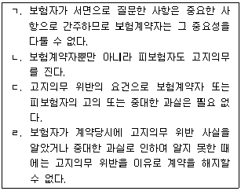
- ㄱ, ㄴ
- ㄴ, ㄷ
- ㄴ, ㄹ
- ㄷ, ㄹ
(정답률: 77%)
10. 위험변경증가시의 통지와 보험계약해지에 관한 설명으로 옳지 않은 것은?
- 보험기간 중에 피보험자가 사고발생의 위험이 현저하게 변경 또는 증가된 사실을 안 때에는 지체없이 보험자에게 통지하여야 한다.
- 보험기간 중에 보험계약자의 고의로 사고발생의 위험이 현저하게 변경 또는 증가된 때에는 보험자는 그 사실을 안 날로부터 1월내에 계약을 해지할 수 있다.
- 보험기간 중에 피보험자의 중대한 과실로 인하여 사고발생의 위험이 현저하게 변경 또는 증가된 때에는 보험자는 그 사실을 안 날부터 1월내에 계약을 해지할 수 있다.
- 보험기간 중에 피보험자의 고의로 인하여 사고발생의 위험이 현저하게 변경 또는 증가된 경우에는 보험자는 계약을 해지할 수 없다.
(정답률: 88%)
11. 보험계약해지 등에 관한 설명으로 옳은 것은?
- 보험사고가 발생한 후라도 보험자가 계속보험료의 지급지체를 이유로 보험계약을 해지하였을 때에는 보험자는 보험금을 지급할 책임이 있다.
- 고지의무를 위반한 사실이 보험사고 발생에 영향을 미치지 아니하였음이 증명된 경우, 보험자는 보험금을 지급할 책임이 있다.
- 보험계약자의 중대한 과실로 인하여 사고발생의 위험이 현저하게 변경 또는 증가되어 계약을 해지한 경우, 보험자는 언제나 보험금을 지급할 책임이 있다.
- 보험계약자가 위험변경증가시의 통지의무를 위반하여 보험자가 보험계약을 해지한 경우, 보험자는 언제나 이미 지급한 보험금의 반환을 청구할 수 있다.
(정답률: 85%)
12. 손해보험에서 보험자의 보험금액 지급과 면책사유에 관한 설명으로 옳지 않은 것은?
- 보험자는 보험금액의 지급에 관하여 약정기간이 있는 경우에는 그 기간내에 피보험자에게 보험금액을 지급하여야 한다.
- 보험자는 보험금액의 지급에 관하여 약정기간이 없는 경우에는 보험사고발생의 통지를 받은 후 지체없이 지급할 보험금액을 정하고, 그 정하여진 날부터 10일내에 피보험자에게 보험금액을 지급하여야 한다.
- 보험사고가 보험계약자 또는 피보험자의 중대한 과실로 인하여 생긴 때에는 보험자는 언제나 보험금액을 지급할 책임이 있다.
- 보험사고가 전쟁 기타의 변란으로 인하여 생긴 때에는 당사자간에 다른 약정이 없으면 보험자는 보험금액을 지급할 책임이 없다.
(정답률: 83%)
13. 재보험계약에 관한 설명으로 옳지 않은 것은?
- 보험자는 보험사고로 인하여 부담할 책임에 대하여 다른 보험자와 재보험계약을 체결할 수 있다.
- 재보험은 원보험자가 인수한 위험의 전부 또는 일부를 분산시키는 기능을 한다.
- 재보험계약의 전제가 되는 최초로 체결된 보험계약을 원보험계약 또는 원수보험계약이라 한다.
- 재보험계약은 원보험계약의 효력에 영향을 미친다.
(정답률: 83%)
14. 상법 제662조(소멸시효)에 관한 설명으로 옳은 것을 모두 고른 것은?
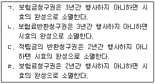
- ㄱ, ㄴ, ㄷ
- ㄱ, ㄴ, ㄹ
- ㄱ, ㄷ, ㄹ
- ㄴ, ㄷ, ㄹ
(정답률: 85%)
15. 보험계약자 등의 불이익변경금지에 관한 설명으로 옳지 않은 것은?
- 불이익변경금지는 보험자와 보험계약자의 관계에서 계약의 교섭력이 부족한 보험계약자 등을 보호하기 위한 것이다.
- 상법 보험편의 규정은 가계보험에서 당사자간의 특약으로 보험계약자의 불이익으로 변경하지 못한다.
- 상법 보험편의 규정은 가계보험에서 당사자간의 특약으로 피보험자의 불이익으로 변경하지 못한다.
- 재보험은 당사자의 특약으로 보험계약자의 불이익으로 변경할 수 없다.
(정답률: 80%)
16. 화재보험계약에 관한 설명으로 옳지 않은 것은?
- 보험자가 손해를 보상함에 있어서 화재와 손해 간에 상당인과관계는 필요하지 않다.
- 보험자는 화재의 소방에 필요한 조치로 인하여 생긴 손해를 보상할 책임이 있다.
- 보험자는 화재발생시 손해의 감소에 필요한 조치로 인하여 생긴 손해를 보상할 책임이 있다.
- 화재보험계약은 화재로 인하여 생긴 손해를 보상할 것을 목적으로 하는 손해보험계약이다.
(정답률: 86%)
17. 화재보험증권에 기재하여야 할 사항으로 옳은 것을 모두 고른 것은?
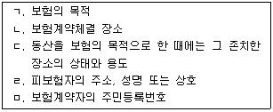
- ㄱ, ㄴ, ㄷ
- ㄱ, ㄷ, ㄹ
- ㄴ, ㄷ, ㅁ
- ㄴ, ㄹ, ㅁ
(정답률: 83%)
18. 집합보험에 관한 설명으로 옳지 않은 것은?
- 집합보험이란 경제적으로 독립한 여러 물건의 집합물을 보험의 목적으로 한 보험을 말한다.
- 집합된 물건을 일괄하여 보험의 목적으로 한 때에는 피보험자의 사용인의 물건도 보험의 목적에 포함된 것으로 본다.
- 집합된 물건을 일괄하여 보험의 목적으로 한 때에는 그 목적에 속한 물건이 보험기간 중에 수시로 교체된 경우에도 보험계약체결시에 존재한 물건은 보험의 목적에 포함된 것으로 한다.
- 집합된 물건을 일괄하여 보험의 목적으로 한 때에는 피보험자의 가족의 물건도 보험의 목적에 포함된 것으로 본다.
(정답률: 73%)
19. 중복보험에 관한 설명으로 옳은 것은?
- 중복보험에서 보험금액의 총액이 보험가액을 초과한 경우 보험자는 각자의 보험금액의 한도에서 연대책임을 진다.
- 피보험이익이 다를 경우에도 중복보험이 성립할 수 있다.
- 중복보험에서 수인의 보험자 중 1인에 대한 권리의 포기는 다른 보험자의 권리의무에 영향을 미친다.
- 중복보험이 성립하기 위해서는 보험계약자가 동일하여야 한다.
(정답률: 80%)
20. 보험가액에 관한 설명으로 옳은 것은?
- 당사자간에 보험가액을 정한 때에는 그 가액은 보험기간 개시시의 가액으로 정한 것으로 추정한다.
- 미평가보험의 경우 사고발생시의 가액을 보험가액으로 한다.
- 보험가액은 변동되지 않는다.
- 기평가보험에서 보험가액이 사고발생시의 가액을 현저하게 초과할 때에는 보험기간 개시 시의 가액을 보험가액으로 한다.
(정답률: 85%)
21. 손해보험계약에 관한 설명으로 옳지 않은 것은?
- 손해보험은 정액보험으로만 운영된다.
- 손해보험계약은 피보험자의 손해의 발생을 요소로 한다.
- 손해보험계약의 보험자는 보험사고로 인하여 생길 피보험자의 재산상의 손해를 보상할 책임이 있다.
- 보험사고의 성질은 손해보험증권의 필수적 기재사항이다.
(정답률: 86%)
22. 초과보험에 관한 설명으로 옳지 않은 것은?
- 초과보험이 성립하기 위해서는 보험금액이 보험계약의 목적의 가액을 현저하게 초과하여야 한다.
- 보험가액이 보험기간 중에 현저하게 감소한 경우에 보험자 또는 보험계약자는 보험료와 보험금액의 감액을 청구할 수 있다.
- 보험계약자의 사기로 인하여 체결된 초과보험계약은 무효로 한다.
- 초과보험의 효과로서 보험료 감액 청구에 따른 보험료의 감액은 소급효가 있다.
(정답률: 80%)
23. 일부보험에 관한 설명으로 옳지 않은 것은?
- 일부보험에 관한 상법의 규정은 강행규정으로 당사자간 다른 약정으로 손해보상액을 보험금액의 한도로 변경할 수 없다.
- 일부보험의 경우 당사자간에 다른 약정이 없는 때에는 보험자는 보험금액의 보험가액에 대한 비율에 따라 보상할 책임을 진다.
- 일부보험은 보험계약자가 보험료를 절약할 목적 등으로 활용된다.
- 일부보험은 보험가액의 일부를 보험에 붙인 보험이다.
(정답률: 85%)
24. 보험자대위에 관한 설명으로 옳지 않은 것은?
- 실손보상의 원칙을 구현하기 위한 제도이다.
- 일부보험의 경우에도 잔존물대위가 인정된다.
- 잔존물대위는 보험의 목적의 일부가 멸실한 경우에도 성립한다.
- 보험금을 일부 지급한 경우 피보험자의 권리를 해하지 않는 범위 내에서 청구권대위가 인정된다.
(정답률: 75%)
25. 손해액의 산정기준에 관한 설명으로 옳은 것을 모두 고른 것은?
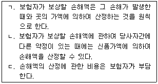
- ㄱ
- ㄱ, ㄴ
- ㄱ, ㄷ
- ㄱ, ㄴ, ㄷ
(정답률: 78%)
2과목: 농어업재해보험법령
26. 농어업재해보험법령상 가축재해보험의 목적물이 아닌 것은?
- 소
- 오리
- 개
- 타조
(정답률: 87%)
27. 농어업재해보험법령상 재해보험의 종류에 따른 보험가입자의 기준에 해당하지 않는 것은?
- 농작물재해보험: 농업재해보험심의회를 거쳐 농림축산식품부장관이 고시하는 농작물을 재배하는 개인
- 임산물재해보험: 농업재해보험심의회를 거쳐 농림축산식품부장관이 고시하는 임산물을 재배하는 법인
- 가축재해보험: 농업재해보험심의회를 거쳐 농림축산식품부장관이 고시하는 가축을 사육하는 개인
- 양식수산물재해보험: 어업재해보험심의회를 거쳐 해양수산부장관이 고시하는 자연수산물을 채취하는 법인
(정답률: 83%)
28. 농어업재해보험법령상 재해보험사업의 약정을 체결하려는 자가 농림축산식품부장관 또는 해양수산부장관에게 제출하여야 하는 서류에 해당하지 않는 것은?
- 정관
- 사업방법서
- 보험약관
- 보험요율의 산정자료
(정답률: 73%)
29. 농어업재해보험법령상 가축재해보험의 손해평가인으로 위촉될 수 있는 자격요건을 갖춘자는?
- 「수의사법」에 따른 수의사
- 농촌진흥청에서 가축사육분야에 관한 연구ㆍ지도 업무를 1년간 담당한 공무원
- 「수산업협동조합법」에 따른 중앙회와 조합의 임직원으로 수산업지원 관련 업무를 3년간 담당한 경력이 있는 사람
- 재해보험 대상 가축을 3년간 사육한 경력이 있는 농업인
(정답률: 73%)
30. 농어업재해보험법령상 손해평가사의 시험에 관한 설명으로 옳은 것은?
- 손해평가사 자격이 취소된 사람은 그 취소 처분이 있은 날부터 2년이 지나지 아니한 경우 손해평가사 자격시험에 응시하지 못한다.
- 「보험업법」에 따른 손해사정사에 대하여는 손해평가사 제1차 시험을 면제할 수 없다.
- 농림축산식품부장관은 손해평가사의 수급(需給)상 필요와 무관하게 손해평가사 자격시험을 매년 1회 실시하여야 한다.
- 손해평가인으로 위촉된 기간이 3년 이상인 사람으로서 손해평가업무를 수행한 경력이 있는 사람은 손해평가사 제2차 시험의 일부과목을 면제한다.
(정답률: 70%)
31. 농어업재해보험법상 손해평가사의 자격취소의 사유에 해당하지 않는 것은?
- 손해평가사가 다른 사람에게 자격증을 빌려준 경우
- 손해평가사가 정당한 사유 없이 손해평가업무를 거부한 경우
- 손해평가사가 다른 사람에게 손해평가사의 업무를 수행하게 한 경우
- 손해평가사가 그 자격을 부정한 방법으로 취득한 경우
(정답률: 81%)
32. 농어업재해보험법상 손해평가사가 그 직무를 게을리 하거나 직무를 수행하면서 부적절한 행위를 하였다고 인정될 경우, 농림축산식품부장관이 손해평가사에게 명할 수 있는 업무정지의 최장 기간은?
- 6개월
- 1년
- 2년
- 3년
(정답률: 67%)
33. 농어업재해보험법령의 내용으로 옳지 않은 것은?
- 보험가입자는 재해로 인한 사고의 예방을 위하여 노력하여야 한다.
- 보험목적물이 담보로 제공된 경우에도 재해보험의 보험금을 지급받을 권리는 압류할 수 없다.
- 재해보험가입자가 재해보험에 가입된 보험목적물을 양도하는 경우 그 양수인은 재해보험 계약에 관한 양도인의 권리 및 의무를 승계한 것으로 추정한다.
- 재해보험사업자는 손해평가인으로 위촉된 사람에 대하여 보험에 관한 기초지식, 보험약관 및 손해평가요령 등에 관한 실무교육을 하여야 한다.
(정답률: 80%)
34. 농업재해보험 손해평가요령에 따른 손해평가반 구성에 포함될 수 있는 자를 모두 고른 것은?
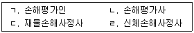
- ㄱ, ㄴ
- ㄴ, ㄷ
- ㄱ, ㄴ, ㄷ
- ㄱ, ㄴ, ㄷ, ㄹ
(정답률: 70%)
35. 농어업재해보험법에서 사용하는 용어의 정의로 옳지 않은 것은?
- "농어업재해보험"이란 농어업재해로 발생하는 재산 피해에 따른 손해를 보상하기 위한 보험을 말한다.
- "보험료"란 보험가입자와 보험사업자 간의 약정에 따라 보험가입자가 보험사업자에게 내야하는 금액을 말한다.
- "보험가입금액"이란 보험가입자의 재산 피해에 따른 손해가 발생한 경우 보험에서 최대로 보상할 수 있는 한도액으로서 보험가입자와 보험사업자 간에 약정한 금액을 말한다.
- "보험금"이란 보험가입자에게 재해로 인한 재산 피해에 따른 손해가 발생한 경우 그 정도에 따라 정부가 보험가입자에게 지급하는 금액을 말한다.
(정답률: 81%)
36. 농어업재해보험법상 회계구분에 관한 내용이다. ( )에 들어갈 용어는?
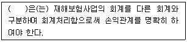
- 손해평가사
- 농림축산식품부장관
- 재해보험사업자
- 지방자치단체의 장
(정답률: 83%)
37. 농어업재해보험법령상 농림축산식품부장관이 재보험에 가입하려는 재해보험사업자와 재보험 약정체결 시 포함되어야 할 사항으로 옳지 않은 것은?
- 재보험수수료
- 정부가 지급하여야 할 보험금
- 농어업재해재보험기금의 운용수익금
- 재해보험사업자가 정부에 내야 할 보험료
(정답률: 61%)
38. 농어업재해보험법령상 농어업재해재보험기금의 관리ㆍ운용에 관한 설명으로 옳지 않은 것은?
- 기금은 농림축산식품부장관이 해양수산부장관과 협의하여 관리ㆍ운용한다.
- 농림축산식품부장관은 기획재정부장관과 협의를 거쳐 기금의 관리ㆍ운용에 관한 사무의 전부를 농업정책보험금융원에 위탁할 수 있다.
- 기금수탁관리자는 회계연도마다 기금결산보고서를 작성하여 다음 회계연도 2월 15일까지 농림축산식품부장관 및 해양수산부장관에게 제출하여야 한다.
- 농림축산식품부장관은 해양수산부장관과 협의하여 기금의 여유자금을 「은행법」에 따른 은행에의 예치의 방법으로 운용할 수 있다.
(정답률: 71%)
39. 농어업재해보험법상 농림축산식품부장관이 농작물 재해보험사업을 효율적으로 추진하기 위하여 수행하는 업무로 옳지 않은 것은?
- 피해 관련 분쟁조정
- 손해평가인력의 육성
- 재해보험 상품의 연구 및 보급
- 손해평가기법의 연구ㆍ개발 및 보급
(정답률: 80%)
40. 농어업재해보험법령상 재정지원에 관한 설명으로 옳은 것은?
- 정부는 재해보험가입자가 부담하는 보험료와 재해보험사업자의 재해보험의 운영 및 관리에 필요한 비용을 지원하여야 한다.
- 지방자치단체는 재해보험사업자의 운영비를 추가로 지원하여야 한다.
- 농림축산식품부장관ㆍ해양수산부장관 및 지방자치단체의 장은 보험료의 일부를 재해보험 가입자에게 지급하여야 한다.
- 「풍수해보험법」에 따른 풍수해보험에 가입한 자가 동일한 보험 목적물을 대상으로 재해보험에 가입할 경우에는 정부가 재정지원을 하지 아니한다.
(정답률: 75%)
41. 농어업재해보험법상 농작물재해보험에 관한 손해평가사 업무로 옳지 않은 것은?
- 손해액 평가
- 보험가액 평가
- 피해사실 확인
- 손해평가인증의 발급
(정답률: 84%)
42. 농어업재해보험법령상 재해보험사업자가 수립하는 보험가입촉진계획에 포함되어야 할 사항에 해당하지 않는 것은?
- 농어업재해재보험기금 관리ㆍ운용계획
- 해당 연도의 보험상품 운영계획
- 보험상품의 개선ㆍ개발계획
- 전년도의 성과분석 및 해당 연도의 사업계획
(정답률: 73%)
43. 농업재해보험 손해평가요령에 따른 손해평가 업무를 원활히 수행하기 위하여 손해평가보조인을 운용할 수 있는 자를 모두 고른 것은?
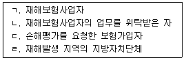
- ㄱ
- ㄷ
- ㄱ, ㄴ
- ㄱ, ㄷ, ㄹ
(정답률: 82%)
44. 농업재해보험 손해평가요령에 따른 손해평가인 위촉의 취소 사유에 해당하지 않는 것은?
- 업무수행과 관련하여「개인정보보호법」을 위반한 경우
- 위촉당시 피성년후견인이었음이 판명된 경우
- 거짓 그 밖의 부정한 방법으로 손해평가인으로 위촉된 경우
- 「농어업재해보험법」제30조에 의하여 벌금이상의 형을 선고받고 그 집행이 종료된 날로부터 2년이 경과되지 않은 경우
(정답률: 71%)
45. 농업재해보험 손해평가요령에 따른 농작물의 손해평가 단위는?
- 농가별
- 농지별
- 필지(지번)별
- 품종별
(정답률: 84%)
46. 농업재해보험 손해평가요령에 따른 보험가액 산정에 관한 설명으로 옳지 않은 것은?
- 농작물의 생산비보장 보험가액은 작물별로 보험가입 당시 정한 보험가액을 기준으로 산정한다. 다만, 보험가액에 영향을 미치는 가입면적 등이 가입당시와 다를 경우 변경할 수 있다.
- 나무손해보장 보험가액은 기재된 보험목적물이 나무인 경우로 최초 보험사고 발생 시의 해당 농지 내에 심어져 있는 과실생산이 가능한 나무에서 피해 나무를 제외한 수에 보험가입 당시의 나무당 가입가격을 곱하여 산정한다.
- 가축에 대한 보험가액은 보험사고가 발생한 때와 곳에서 평가한 보험목적물의 수량에 적용가격을 곱하여 산정한다.
- 농업시설물에 대한 보험가액은 보험사고가 발생한 때와 곳에서 평가한 피해목적물의 재조달가액에서 내용연수에 따른 감가상각률을 적용하여 계산한 감가상각액을 차감하여 산정한다.
(정답률: 75%)
47. 농업재해보험 손해평가요령상 농작물의 품목별ㆍ재해별ㆍ시기별 손해수량 조사방법 중 특정위험방식 상품 “사과”에 관한 기술이다. ( )에 들어갈 내용으로 옳은 것은?
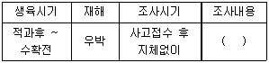
- 유과타박율 조사
- 적과후착과수 조사
- 낙과수 조사
- 수확전착과피해 조사
(정답률: 50%)
48. 농업재해보험 손해평가요령상 농작물의 품목별ㆍ재해별ㆍ시기별 손해수량 조사방법 중 종합위험방식 상품인 “벼”에만 해당하는 조사내용으로 옳은 것은?
- 피해사실확인 조사
- 재이앙(재직파)피해 조사
- 경작불능피해 조사
- 수확량 조사
(정답률: 82%)
49. 농업재해보험 손해평가요령에 따른 손해평가준비 및 평가결과 제출에 관한 설명으로 옳지 않은 것은?
- 손해평가반은 손해평가결과를 기록할 수 있도록 현지조사서를 직접 마련해야 한다.
- 손해평가반은 보험가입자가 정당한 사유없이 서명을 거부하는 경우 보험가입자에게 손해평가 결과를 통지한 후 서명없이 현지조사서를 재해보험사업자에게 제출하여야 한다.
- 손해평가반은 보험가입자가 정당한 사유없이 손해평가를 거부하여 손해평가를 실시하지 못한 경우에는 그 피해를 인정할 수 없는 것으로 평가한다는 사실을 보험가입자에게 통지한 후 현지조사서를 재해보험사업자에게 제출하여야 한다.
- 재해보험사업자는 보험가입자가 손해평가반의 손해평가결과에 대하여 설명 또는 통지를 받은 날로부터 7일 이내에 손해평가가 잘못되었음을 증빙하는 서류 또는 사진 등을 제출 하는 경우 다른 손해평가반으로 하여금 재조사를 실시하게 할 수 있다.
(정답률: 78%)
50. 농업재해보험 손해평가요령상 농작물의 보험금 산정 기준에 따른 종합위험방식 수확감소 보장 “양파”의 경우, 다음의 조건으로 산정한 보험금은?
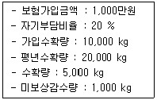
- 300만원
- 400만원
- 500만원
- 600만원
(정답률: 60%)
3과목: 재배학 및 원예작물학
51. 과수 분류 시 인과류에 속하는 것은?
- 자두
- 포도
- 감귤
- 사과
(정답률: 80%)
52. 작물재배에 있어서 질소(N)에 관한 설명으로 옳지 않은 것은?
- 질산태(NO3-)와 암모늄태(NH4+)로 식물에 흡수된다.
- 작물체 건물중의 많은 함량을 차지하는 중요한 무기성분이다.
- 콩과작물은 질소 시비량이 적고, 벼과작물은 시비량이 많다.
- 결핍증상은 늙은 조직보다 어린 생장점에서 먼저 나타난다.
(정답률: 68%)
53. 작물의 필수원소는?
- 염소(Cl)
- 규소(Si)
- 코발트(Co)
- 나트륨(Na)
(정답률: 71%)
54. 재배 시 산성토양에 가장 약한 작물은?
- 벼
- 콩
- 감자
- 수박
(정답률: 64%)
55. 작물재배 시 습해의 대책이 아닌 것은?
- 배수
- 토양 개량
- 황산근비료 시용
- 내습성 작물과 품종 선택
(정답률: 83%)
56. 작물재배 시 건조해의 대책으로 옳지 않은 것은?
- 중경제초
- 질소비료 과용
- 내건성 작물 및 품종 선택
- 증발억제제 살포
(정답률: 83%)
57. 작물재배 시 하고(夏枯)현상으로 옳지 않은 것은?
- 화이트클로버는 피해가 크고, 레드클로버는 피해가 경미하다.
- 다년생인 북방형 목초에서 여름철에 생장이 현저히 쇠퇴하는 현상이다.
- 고온, 건조, 장일, 병충해, 잡초무성의 원인으로 발생한다.
- 대책으로는 관개, 혼파, 방목이 있다.
(정답률: 80%)
58. 다음이 설명하는 냉해는?
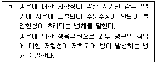
- ㄱ : 지연형 냉해, ㄴ : 병해형 냉해
- ㄱ : 병해형 냉해, ㄴ : 혼합형 냉해
- ㄱ : 장해형 냉해, ㄴ : 병해형 냉해
- ㄱ : 혼합형 냉해, ㄴ : 장해형 냉해
(정답률: 77%)
59. 작물 외관의 착색에 관한 설명으로 옳지 않은 것은?
- 작물 재배 시 광이 없을 때에는 에티올린(etiolin)이라는 담황색 색소가 형성되어 황백화 현상을 일으킨다.
- 엽채류에서는 적색광과 청색광에서 엽록소의 형성이 가장 효과적이다.
- 작물 재배 시 광이 부족하면 엽록소의 형성이 저해된다.
- 과일의 안토시안은 비교적 고온에서 생성이 조장되며 볕이 잘 쬘 때에 착색이 좋아진다.
(정답률: 56%)
60. 장일일장 조건에서 개화가 유도ㆍ촉진되는 작물을 모두 고른 것은?
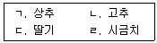
- ㄱ, ㄴ
- ㄱ, ㄹ
- ㄴ, ㄷ
- ㄷ, ㄹ
(정답률: 65%)
61. 다음에서 내한성(耐寒性)이 가장 강한 작물(A)과 가장 약한 작물(B)은?
- A : 사과, B : 서양배
- A : 사과, B : 유럽계 포도
- A : 복숭아, B : 서양배
- A : 복숭아, B : 유럽계 포도
(정답률: 79%)
62. 우리나라의 과수 우박피해에 관한 설명으로 옳은 것은?
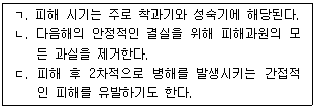
- ㄱ, ㄴ
- ㄱ, ㄷ
- ㄴ, ㄷ
- ㄱ, ㄴ, ㄷ
(정답률: 78%)
63. 과수원의 태풍피해 대책으로 옳지 않은 것은?
- 방풍림으로 교목과 관목의 혼합 식재가 효과적이다.
- 방풍림은 바람의 방향과 직각 방향으로 심는다.
- 과수원내의 빈 공간 확보는 태풍피해를 경감시켜 준다.
- 왜화도가 높은 대목은 지주 결속으로 피해를 줄여준다.
(정답률: 70%)
64. 작물의 육묘에 관한 설명으로 옳지 않은 것은?
- 수확기 및 출하기를 앞당길 수 있다.
- 육묘용 상토의 pH는 낮을수록 좋다.
- 노지정식 전 경화과정(hardening)이 필요하다.
- 육묘와 재배의 분업화가 가능하다.
(정답률: 72%)
65. 다음 설명의 영양번식 방법은?
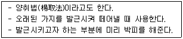
- 성토법(盛土法)
- 선취법(先取法)
- 고취법(高取法)
- 당목취법(撞木取法)
(정답률: 64%)
66. 다음의 과수원 토양관리 방법은?
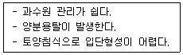
- 초생재배
- 피복재배
- 부초재배
- 청경재배
(정답률: 60%)
67. 사과 과원에서 병해충종합관리(IPM)에 해당되지 않는 것은?
- 응애류 천적 제거
- 성페로몬 이용
- 초생재배 실시
- 생물농약 활용
(정답률: 57%)
68. 호냉성 채소작물은?
- 상추, 가지
- 시금치, 고추
- 오이, 토마토
- 양배추, 딸기
(정답률: 66%)
69. 작물의 생육과정에서 칼슘결핍에 의해 나타나는 증상으로만 짝지어진 것은?
- 배추 잎끝마름증상, 토마토 배꼽썩음증상
- 토마토 배꼽썩음증상, 장미 로제트증상
- 장미 로제트증상, 고추 청고증상
- 고추 청고증상, 배추 잎끝마름증상
(정답률: 73%)
70. 채소작물 재배 시 에틸렌에 의한 현상이 아닌 것은?
- 토마토 열매의 엽록소 분해를 촉진한다.
- 가지의 꼭지에서 이층(離層)형성을 촉진한다.
- 아스파라거스의 육질 연화를 촉진한다.
- 상추의 갈색 반점을 유발한다.
(정답률: 63%)
71. 다음 과수 접목법의 분류기준은?
- 접목부위에 따른 분류
- 접목장소에 따른 분류
- 접목시기에 따른 분류
- 접목방법에 따른 분류
(정답률: 76%)
72. 화훼작물의 플러그묘 생산에 관한 옳은 설명을 모두 고른 것은?
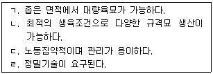
- ㄱ, ㄴ, ㄷ
- ㄱ, ㄴ, ㄹ
- ㄱ, ㄷ, ㄹ
- ㄴ, ㄷ, ㄹ
(정답률: 79%)
73. 화훼작물의 진균병이 아닌 것은?
- Fusarium에 의한 시들음병
- Botrytis에 의한 잿빛곰팡이병
- Xanthomonas에 의한 잎반점병
- Colletotrichum에 의한 탄저병
(정답률: 54%)
74. 시설내의 온도를 낮추기 위해 시설의 벽면 위 또는 아래에서 실내로 세무(細霧)를 분사시켜 시설 상부에 설치된 풍량형 환풍기로 공기를 뽑아내는 냉각방법은?
- 팬 앤드 포그
- 팬 앤드 패드
- 팬 앤드 덕트
- 팬 앤드 팬
(정답률: 72%)
75. 다음이 설명하는 시설재배용 플라스틱 피복재는?
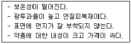
- 폴리에틸렌(PE) 필름
- 염화비닐(PVC) 필름
- 에틸렌아세트산(EVA) 필름
- 폴리에스터(PET) 필름
(정답률: 73%)